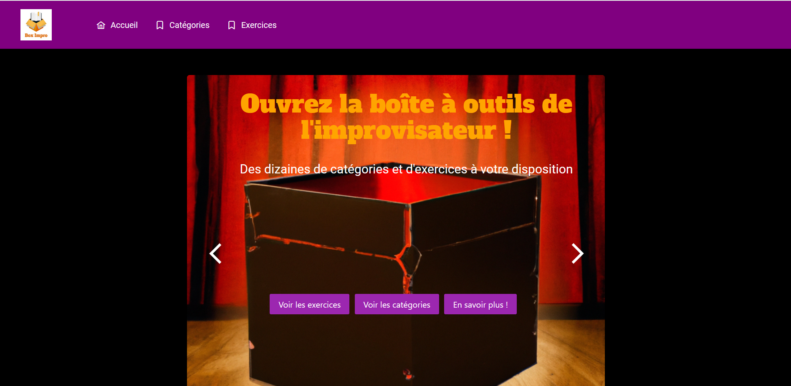
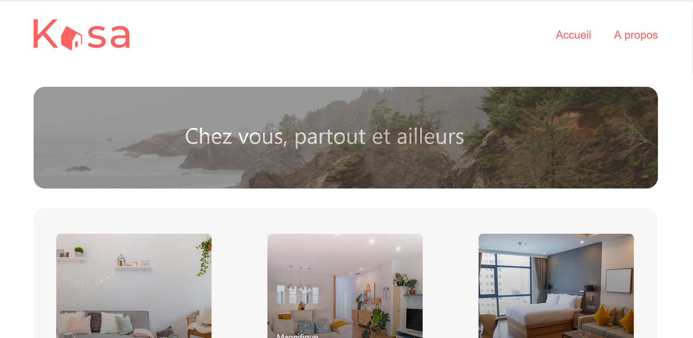
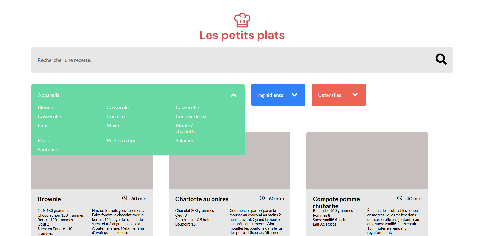
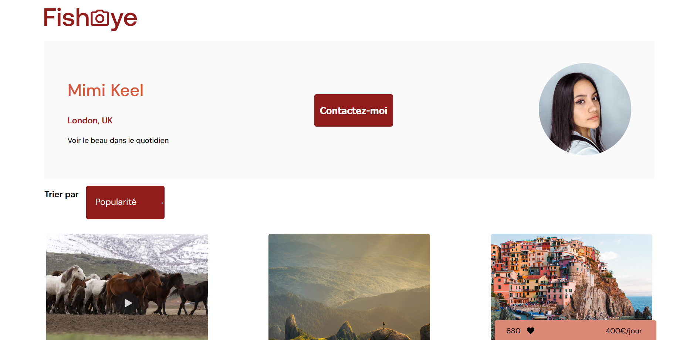
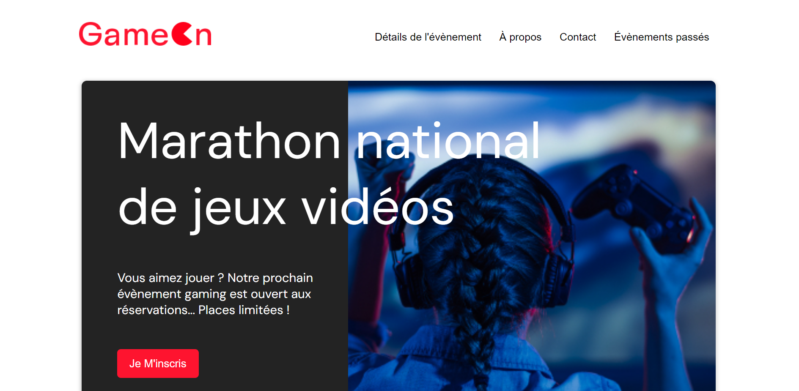
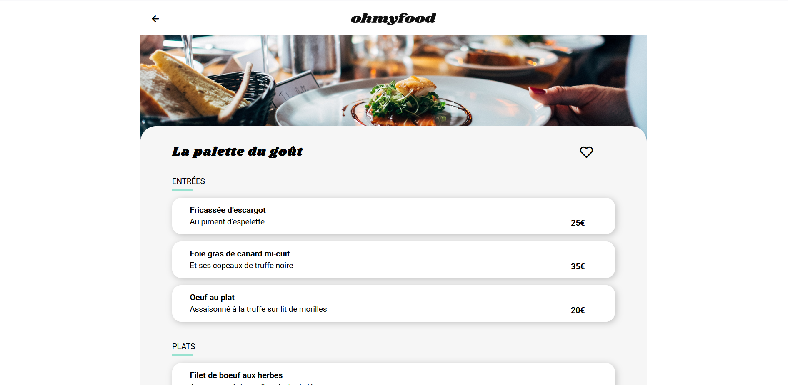
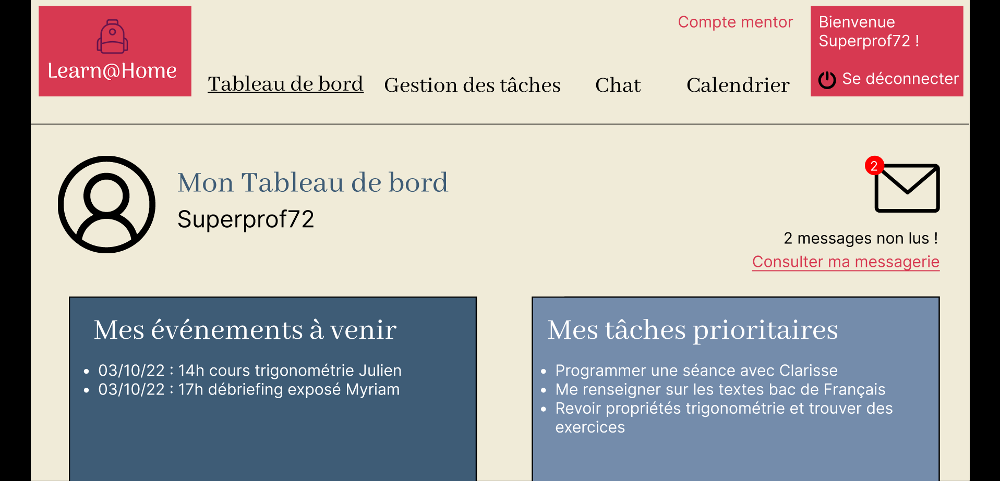
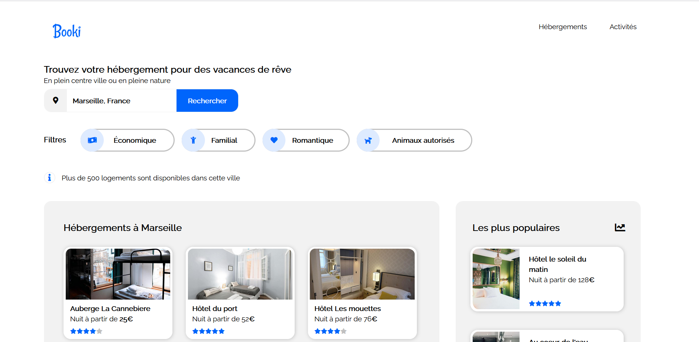

Plus qu'une simple application React, une future base de données interactive pour les passionnés
d'improvisation théâtrale. Le but de BoxImpro est de pouvoir rassembler un maximum de catégories
d'improvisation et d'exercices de théâtre. Ce projet se veut une synthèse de tout ce que j'ai
appris : fonctionnalités de recherche et de filtrage, gestion d'un state global, composants qui
s'affichent de manière programmative, utilisation de carousels, tests unitaires et
d'intégration. Sont encore en chantier : de futures animations, une méthode d'authentification,
un travail de création et d'interaction avec une API, et peut-être encore d'autres
fonctionnalités secrètes.

Une application React que j'ai créee à partir d'un site codé avec jQuery. Le but était de
refondre
le site afin d'améliorer ses performances. En utilisant ce site sur votre navigateur, vous
pouvez créer
votre base de données qui sera stockée dans le "localStorage". Une fois que vous aurez crée
des
employés,
vous pourrez les trier ou les filtrer sur le "tableau employés".
J'ai utilisé la librairie Redux afin d'avoir une gestion de state globale pour mes données
et
mes composants.
Ce site comprend également une librairie que j'ai moi-même publiée sur npm :
"romain-6793-react-simple-dropdown".

La première application React que j'ai développé. Une application très bien architecturée,
découpée en composants réutilisables. Un router qui relie les pages entre elles. Les images et
les
pages "logement" s'affichent de manière programmatique, ainsi que leurs éléments
(descriptions, équipements, tags, carousels).

Un projet Javascript qui permet d'effectuer des tris de données très précis, en utilisant le
filtrage
par tags. On peut combiner ces tags à une recherche plus classique sur barre de recherche.

Un projet très complet réalisé avec Javascript. J'y organise les données de façon programmatique
grâce au "design pattern factory". Respectant des normes d'accessibilité, le site est
consultable
via un
lecteur d'écran. Il est possible de trier les photos/vidéos et même de les visionner sur un
carousel.

Mon premier projet réalisé avec Javascript. Il s'agissait de contrôler la validation d'un
formulaire d'inscription, notamment à l'aide d'expressions régulières (Regex).

Un site web réalisé avec HTML5 et CSS3 (avec l'aide de Sass) qui a la particularité d'être
développé en mobile first et
d'intégrer des animations CSS et keyframes pour le rendre plus dynamique.

Un prototype réalisé sur Figma à partir d'un cahier des charges. Ce prototype est le résultat
d'un processus "agile" visant à repérer les besoins du client, à créer des user stories et à les
traduire graphiquement.

Ma toute première création en HTML5 et CSS3, il s'agissait de transformer une maquette en page
web et de la rendre responsive.